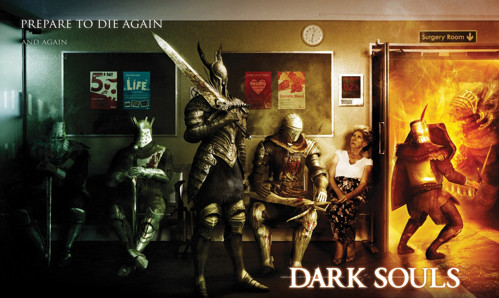
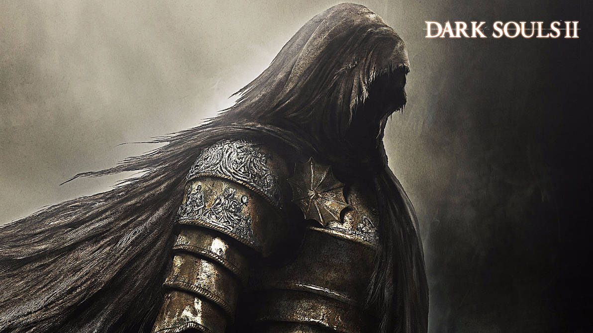
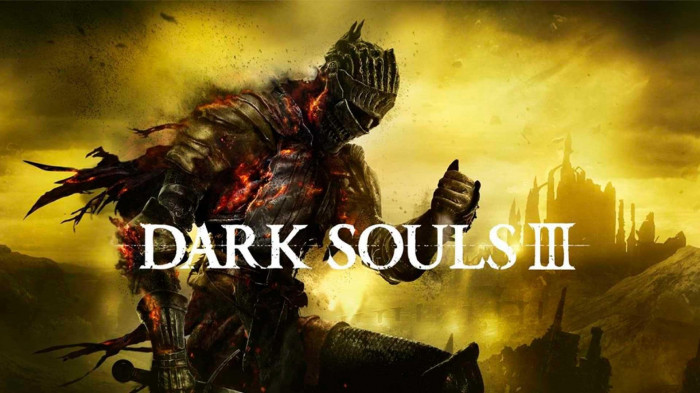

- 
- 
- 

¡Prepárate para una aventura épica en la oscuridad! Dark Souls es una franquicia
de videojuegos de acción y aventuras que se ha ganado un lugar entre los fans de
los juegos de acción más entusiastas. Esta serie de éxitos de ventas, ambientada
en un mundo gótico de fantasía, ofrece una mezcla de exploración, combate y resolución
de puzzles, todo con un toque de misterio y una atmósfera sombría. Desde sus raíces en
2009 con el primer juego de la serie, Dark Souls se ha expandido a través de varias entregas,
cada una con su propia historia y desafíos únicos. ¡Prepárate para una aventura llena de miedo,
peligro y emoción!
La serie comienza con el primer juego, Dark Souls, ambientada en el fantástico mundo de Lordran, controlado
por los Señores de los Anillos, figuras celestiales que los jugadores deben liberar de sus cadenas para restaurar
el equilibrio. Los jugadores, conocidos como Hijos de la Oscuridad, deben luchar contra los Señores Oscuros mientras
navegan por el extenso escenario. Los personajes también pueden interactuar con el entorno, comprar equipamiento, escuchar
música y jugar con otros jugadores.
Los siguientes dos juegos son Dark Souls II y Dark Souls III, que exploran y amplían el mundo de los juegos originales. Ambos
títulos tienen lugar en un lugar denso, con personajes adicionales y enemigos más fuertes para enfrentar. Juntos, estos tres juegos
forman la trilogía de la saga Dark Souls completa.
Los videojuegos de la saga Dark Souls tienen lugar en el mundo de Lordran, una Tierra de Sombras, habitada por peligrosos habitantes y
escenarios extremos.
Su conexión profunda con la mitología popular enfatiza un tema atemporal: el viaje del héroe hacia la recompensa y la redención. Esta
satisfactoria narrativa llama la atención de múltiples jugadores a sus fascinantes mundos.